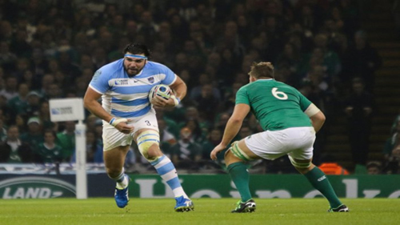

Real Chubut - Agencia de Noticias


El comodorense Ramiro Herrera viaja con Los Pumas para jugar el Rugby Championship

El pilar integra el plantel de la selección argentina de rugby que el sábado 20 debutará en el certamen, ante los Springboks de Sudáfrica, en Johannesburgo.
Con el pilar ex chenque rugby club Ramiro "Cumpa" Herrera dentro de la delegación, el seleccionado argentino de rugby, Los Pumas, viajará hoy a Johannesburgo, Sudáfrica, donde el sábado 20 debutará frente a los Springboks de ese país, en su debut en la quinta edición del torneo Rugby Championship.
El debut de Los Pumas frente al conjunto sudafricano está pautado para el sábado 20 de agosto a las 12:05 hora argentina en el Mbombela Stadium, en la ciudad de Nelspruit.
El conjunto argentino compuesto por 26 jugadores, tras realizar una escala en la ciudad de San Pablo, arribará a Sudáfrica mañana.
El torneo Rugby Championship está integrado por las potencias del hemisferio Sur, el campeón del mundo, Nueva Zelanda, Australia, Sudáfrica y Argentina.
Posteriormente al primer choque en Nelspruit, Los Pumas disputarán, el sábado 27, la revancha frente a los sudafricanos en el estadio Padre Ernesto Martearena de la ciudad de Salta.
El plantel argentino que viajará hoy es el siguiente: Enrique Pieretto, Agustín Creevy (capitán), Nahuel Tetaz Chaparro, Felipe Arregui, Ramiro Herrera, Lucas Noguera Paz y Julián Montoya (como primeras líneas), Guido Petti, Tomás Lavanini y Matías Alemanno (segundas líneas).
Los terceras líneas convocados son: Pablo Matera, Javier Ortega Desio, Marcos Kremer, Facundo Isa y Juan Manuel Leguizamón.
Entre los tres cuartos estarán los medios scrums Marín Landajo y Tomás Cubelli, el medio apertura Nicolás Sánchez, los centros Santiago González Iglesias, Juan Martín Hernández y Matías Orlando.
Mientras que los wings y fullbacks son: Joaquín Tuculet, Santiago Cordero, Lucas González Amorosino, Manuel Montero y Ramiro Moyano.
Los Pumas se medirán en la tercera fecha del Rugby Championship, el sábado 10 de setiembre, frente a los All Blacks, en el FMG Stadium de la ciudad de Hamilton, y el 17 de ese mes chocarán contra los Wallabies de Australia, en el Nib Stadium de Perth.
Posteriormente, jugarán frente a los últimos bicampeones mundiales en el estadio de Vélez y finalizarán su participación en el Rugby Championship como locales frente a Australia, en el Twickenham Stadium de Londres. Este será el primer encuentro de esta competencia que se disputará fuera del hemisferio Sur.
Los Pumas derrotaron el año pasado a Sudáfrica por 37-25, encuentro disputado en la ciudad de Durban en la última fecha del Rugby Championship y que marcó el primer triunfo de visitantes en el torneo.
El año pasado, Australia derrotó en la ciudad de Sydney a Nueva Zelanda –ganador de las tres ediciones anteriores– por 27-19 y de esa manera obtuvo el primer título de campeón en el Rugby Championship.